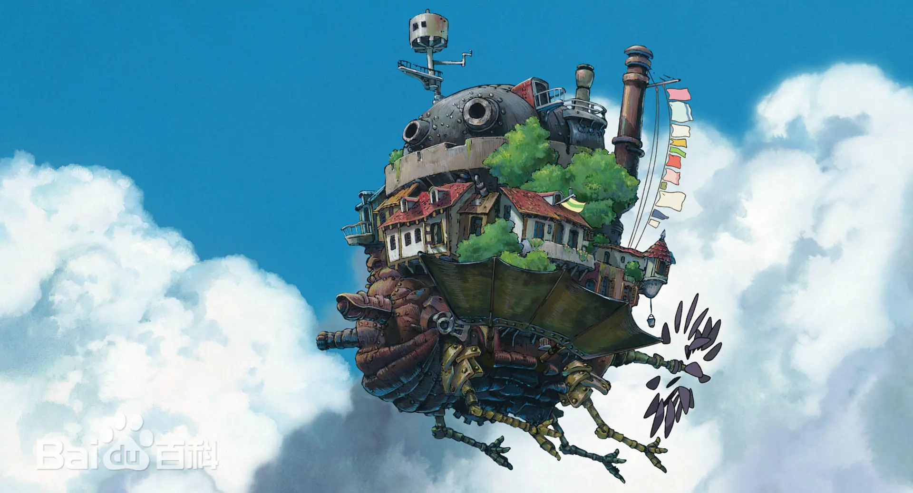
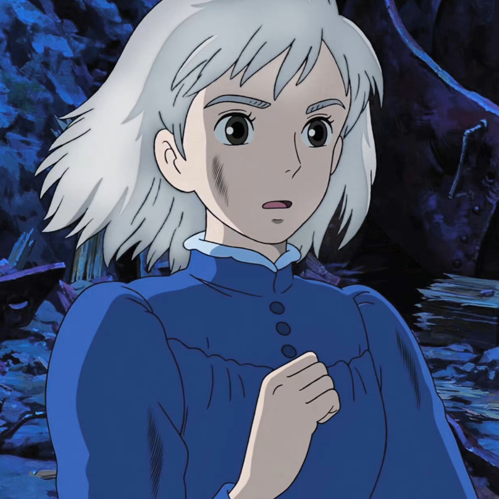
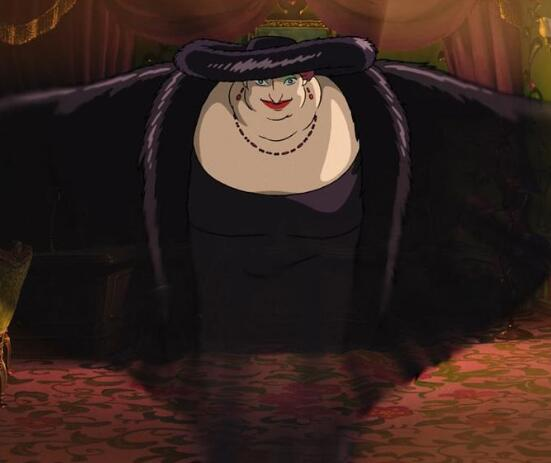

影片简介
《哈尔的移动城堡》是宫崎骏执导的动画电影，改编自英国作家戴安娜·韦恩·琼斯的同名小说。影片于2004年11月20日在日本上映，讲述了少女苏菲被荒野女巫诅咒变成老太婆后，意外进入魔法师哈尔的移动城堡，从而展开的一段奇幻冒险故事。
本片获得了第78届奥斯卡金像奖最佳动画长片提名，并在全球取得了2.35亿美元的票房成绩，成为吉卜力工作室最成功的作品之一。
剧情概述
故事发生在架空的欧洲风格王国，18岁的少女苏菲在父亲去世后接手了父亲的帽子店。一天，苏菲在街上遇到了帅气的魔法师哈尔，并因此被荒野女巫嫉妒并诅咒，变成了90岁的老太婆。
为了解除诅咒，苏菲离开了小镇，在荒野中遇到了会说话的火焰恶魔卡西法，并进入了哈尔的移动城堡。城堡由卡西法的魔力驱动，可以四处移动。
幕后花絮
宫崎骏曾说道，最满意的作品是《哈尔的移动城堡》。影片中城镇场景则主要参考法国阿尔萨斯、法国巴黎及德国海德堡。
影片中的城堡，基本都是日本民族文化与世界知名建筑结合的产物，部分带有19世纪末钢铁工厂的特殊风格。

主要角色

苏菲
本作女主角，被诅咒变成90岁的老婆婆

哈尔
强大的魔法师，移动城堡的主人
卡西法
与哈尔定下契约的火焰恶魔

荒野女巫
因嫉妒苏菲而对她施下诅咒
电影片段